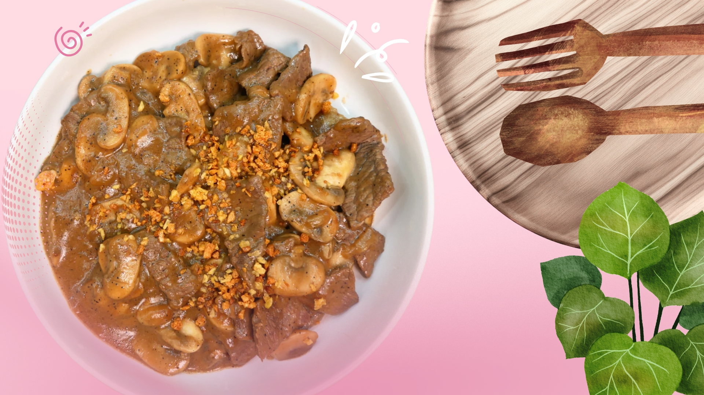

Garlic Pepper Beef in Mushroom Gravy
Get ready for your new favorite comfort food! This Garlic Pepper Beef in Mushroom Gravy is unbelievably quick and delicious — combining tender, peppery beef with a rich, savory mushroom sauce. Perfect for a satisfying weeknight meal!

Ingredients:
- 1 1/2 lbs beef sirloin, thinly sliced
- 1 1/2 heads garlic, minced
- 2 tablespoons soy sauce
- 3 tablespoons oyster sauce
- 1/2 teaspoon ground black pepper
- 1/4 teaspoon salt
- 1/4 cup cooking oil
- 3 tablespoons butter
- 4 tablespoons all-purpose flour
- 14 oz button mushrooms, sliced
- 1/2 teaspoon onion powder
- 1/4 teaspoon garlic powder
- 1/8 teaspoon ground black pepper (for gravy)
- 1 3/4 cups beef broth
- Salt to taste
Instructions:
- Heat the cooking oil in a large skillet over medium heat and add the minced garlic. Cook until golden brown and crispy, about 2-3 minutes. Remove and set aside.
- Using the same pan, sauté the sliced beef until browned on all sides, about 4-5 minutes.
- Add soy sauce, oyster sauce, salt, and ground black pepper. Mix well and cook for another minute.
- Remove beef from the pan. In the same pan, melt butter over medium heat, then whisk in the flour until lightly browned.
- Gradually pour in beef broth while whisking to avoid lumps. Add mushrooms, onion powder, garlic powder, and more pepper. Simmer until thickened.
- Return the beef and toasted garlic to the pan. Mix until well coated with the gravy. Cook for 2-3 minutes more. Serve hot!